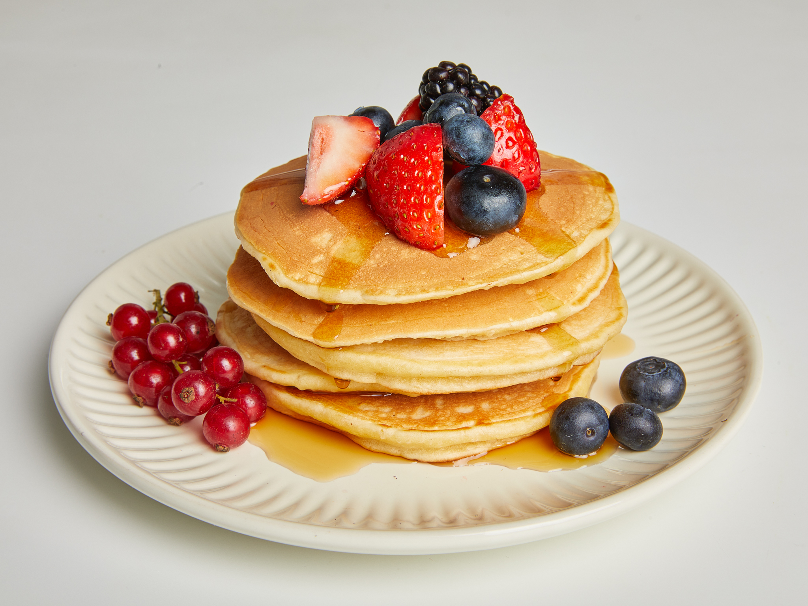

|
 |
- Mix dry ingredients. In a small bowl, whisk together flour, sugar, baking powder, and salt; set aside.
- Mix wet ingredients. In a medium bowl, whisk together milk, butter (or oil), and egg.
- Combine wet and dry ingredients. Add dry ingredients to milk mixture; whisk until just moistened. (Do not overmix; a few small lumps are fine.)
- Heat and oil skillet or griddle. Heat a large skillet (nonstick or cast-iron) or griddle over medium. Fold a sheet of paper towel in half, and moisten with oil; carefully rub skillet with oiled paper towel.
- Spoon batter onto skillet or griddle. For each pancake, spoon 2 to 3 tablespoons of batter onto skillet, using the back of the spoon to spread batter into a round (you should be able to fit 2 to 3 in a large skillet).
- Cook first side. Cook until surface of pancakes have some bubbles and a few have burst, 1 to 2 minutes.
- Flip pancakes. Flip carefully with a thin spatula, and cook until browned on the underside, 1 to 2 minutes more.
- Serve immediately, or keep warm in oven. Transfer to a baking sheet or platter; cover loosely with aluminum foil, and keep warm in oven. Continue with more oil and remaining batter. (You'll have 12 to 15 pancakes.) Serve warm, with desired toppings.
|
- 1 cup all purpose flour
- 2 tablespoons sugar
- 2 teaspoons baking powder
- 1/2 teaspoon salt
- 1 cup milk
- 2 tablespoons unsalted butter,
melted, or vegetable oil
- 1 large egg
- 1 tablespoon vegetable oil
- Assorted toppings, such as
butter, maple syrup, confectioners' sugar,
honey, jams, preserves, sweetened whipped cream, or chocolate syrup
|